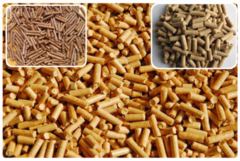
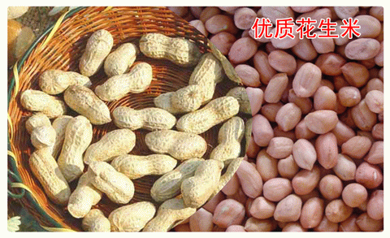

联系方式
联系地址：
河南省新野县王庄镇244省道88公里处（邮编: 473525） 联系电话：
13949324051（张焕青）
18637778958（张立）
河南省新野县王庄镇244省道88公里处（邮编: 473525）
13949324051（张焕青）
18637778958（张立）
赞助商广告
友情链接
公司简介
河南省新野县金色田园秸秆加工厂河南省新野县金色田园花生米加工厂，地处河南省新野县王庄镇，占地面积8.5余亩，年产生物质颗粒燃料1万吨，此燃料主要用于取代锅炉燃煤，属国家新能源开发项目，具有节能环保可再生利用。并常年经营中华五号、白沙系列分级筛选花生米、通货米、油料米。
 
地理位置
媒体报道
- 新野县工业和信息化局：新野县金色田园秸秆加工厂年产1万吨固体成型燃料生产线项目（2012-01-09）
- 王庄镇党政办：王庄镇2011年上半年招商引资和项目建设取得新进展（2011-07-13）
- 齐鲁花生网五星级推荐：生物质颗粒燃料=新野花生米=河南省新野县金色田园秸秆加工厂（2011-04-21）